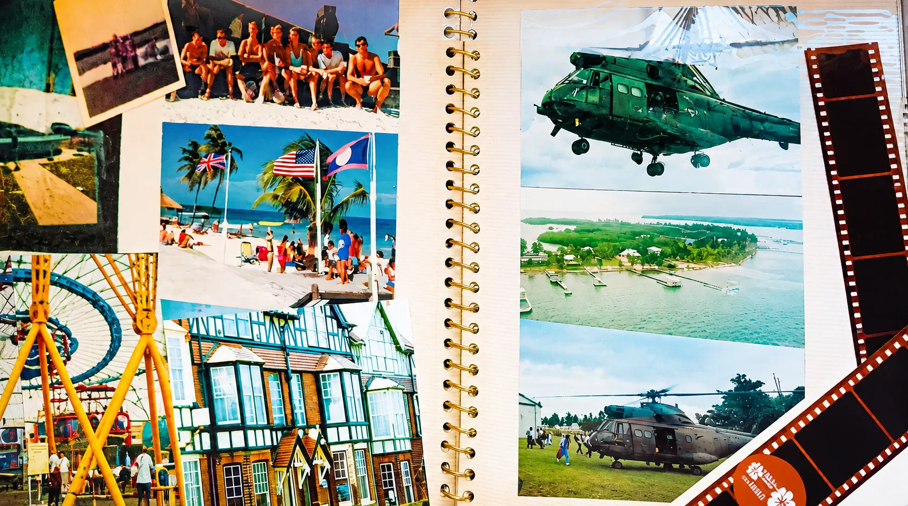
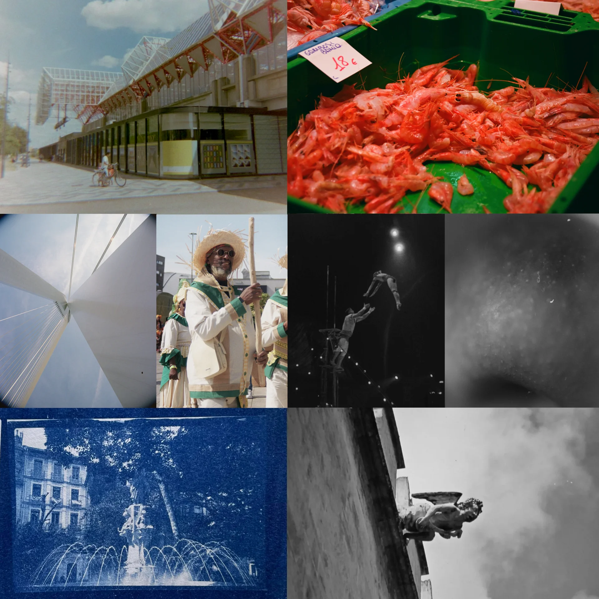
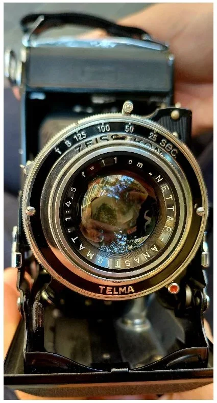

Film Photography
Then and Now
When I was nine, my maternal grandfather gave me a black-and-white roll-film camera. Film stayed my medium for the next thirty years or so; it taught me to frame deliberately, to read the light, and to wait for the chemistry. Digital came later; the habits stayed.
Three generations, one medium — from the albums (1970s to 2002)

From the top left, a colour print, faded with age, shows my maternal grandfather, my father, and me in the centre, flanked by my brothers; Jeffrey, on the right, is sadly no longer with us. It was taken near the Llangollen branch of the Shropshire Union Canal in North Wales in the late 1970s. Below it is the unmistakable structure of the London Millennium Dome in 2000, years before it became The O2. Lower down, a house (three flats) with a sea view on the Norfolk coast: the first home of my own that I bought.
In the centre are snapshot-style photos from my Royal Air Force years in Belize, Central America: a row of young servicemen soaking up the sun one weekend – a mix of RAF, Army, and Navy, as you’d expect from a Joint Services Adventurous Training Centre. I’m third from the left in the foreground. Beside it, flags flying on Caye Caulker in the Caribbean Sea, a boat ride from where I worked on St George’s Caye.
On the right page – appropriately, on top – is an RAF Puma helicopter approaching to land. I flew in Pumas in Belize a few times and, in full scuba kit, led a group jump out of one and into the sea.
Below it, St George’s Caye from the air, seen from the Puma on a different day’s flight. The green building on the left was the staff residence; it is now a luxury hotel.
At the bottom, a Puma on a quick turnaround to collect us, a team, after a weekend of R&R. Here, first thing on a Monday morning, we were boarding at San Pedro, to the north and nearer Mexico's Yucatán peninsula. After a rolling takeoff on the island's short airfield, we climbed away and later swooped low over the Caribbean Sea on the fifteen-minute flight southwards, back to work.
Film today - Passing the Torch
When digital photography became widespread in the early 2000s, I started with an Olympus camera and waterproof housing for SCUBA diving pictures. As I used the camera out of its housing on land too, for me film photography became history. To put it another way: photo albums like the above are from an era when film was simply how photographs and slides were made. All the time!
Now, however, for the growing number of photographers who have recently taken up analogue photography, it is a preference. Nobody needs film any more, which is exactly why some creative people opt for it. Yet, while digital capture eventually took over my primary workflow after many years, the habits formed in the film era never left.
Today, the craft continues to thrive in the hands of a new generation of photographers who choose film not out of nostalgia, but for its organic rendering, chemical magic, and visual intentionality. Film was never merely a relic of the past—it remains a deliberate, tactile medium defined by discipline, patience, and a deep respect for physical light.
Same medium, opposite reasons: I used film because there was nothing else; the new generation enjoys film because there is everything else.
Why people take up analogue
Elaborating on the above, these reasons come up again and again:
- Slowing down. Limited frames and the cost of each make you think before you press the shutter. Many photographers report being more deliberate when they go back to digital as well.
- Anticipation. Waiting to see the results is, for many, part of the charm of analogue photography.
- Something physical. Loading, winding, developing, and a negative or print you can hold. The hands-on side builds a deeper connection to the craft.
- The look: grain, colour and tone – and for some a signature style.
- A break from screens and algorithms. A piece by Fortune in 2026 links the revival to young people rejecting algorithms and social-media fatigue. The same article cited a report that about 35% of the world's 42 million active film-camera users in 2025 were aged 18 to 30, a figure to treat as indicative.
To put it another way: film photography is a choice.
Guest spotlight
I was reminded of the above in early 2026 when I met a new face at the Club Fotográfico de Alicante, Lev K. After a photo presentation evening, we got talking almost straight away. Lev has been shooting film since 2025 and speaks in impressive detail about lenses and equipment, including the gear he buys. The technical depth he voices is admirable.
Since beginning, this motivated young photographer has progressed to scanning, developing and printing at home. He has already moved into medium format and cyanotype. For him, film is not nostalgia – it is a craft he is mastering at remarkable speed.
In autumn 2026, he and I co-hosted the International Foto Walk in Alicante (fotoapp.co). Lev spent some years in northern Europe and now lives in Spain. His analogue and digital photography include shooting film for just over a year, colour street scenes, black-and-white night studies, and cyanotype prints. I find his knowledge of the medium genuinely inspirational.
Here is how he describes his journey, followed by a collage of eight of his frames.
Lev: “My analogue journey started around August 2025 with a disposable Kodak camera that was on discount because it had expired; you can see a picture from it at the upper left of the collage [below]. Despite being just a basic plastic brick, the feeling and the experience left a lasting impression on me and kickstarted this passion.
Since then I have come a long way, slowly building up from basically nothing to complete scanning, developing and printing at home, even dipping my toes into medium format (as seen with the cyanotype blueprint). The thrill of bringing out of the darkroom a print that you shot, developed and produced yourself is incredible; this tactility of the results is the core of this passion for me.”

Collage: Eight analogue frames by Lev
From left to right:
- Top: A lattice-roofed building and a cyclist, in faded pastels, from the first disposable Kodak camera • Red prawns in a green crate at a market stall.
- Middle row: Structure and taut cables seen from below • A smiling man in a straw hat at a parade (cultural event in Amsterdam, Holland)• Acrobats in Cirque du Soleil, during their Alicante visit • Close-up, grainy abstract study of an apple.
- Bottom: A cyanotype of the Fuente de la Aguadora in Plaza Gabriel Miró, Alicante, framed by centennial ficus trees and classic balconies. • Stone cherub on a wall against the clouds.
Here is one of his film cameras that he is rightly proud of: a Zeiss Ikon Nettar 515/2.

When I posted a blog picture of the Nettar with its Nettar Anastigmat 1:4.5 lens online, the post proved particularly popular. While the Nettar 515/2 is Lev's prized folding camera for 120 roll film (medium format) and Telma shutter, an Ikonta was used to capture the negative for the Prussian blue cyanotype print.
Good Light
Looking across these decades — from family snapshots and my time in Central America to contemporary street scenes and handcrafted cyanotypes — is a delightful reminder that analogue photography is far from a closed chapter. It remains an active, living craft, defined not by nostalgia, but by visual intentionality, chemical magic, and technical mastery.
Whether you are loading your very first roll of 35mm film, experimenting in a home darkroom, or stepping out with a classic folding camera, there is something truly irreplaceable about waiting patiently before holding a physical negative in your hands. To everyone continuing to practice, explore, and pass on the craft: good light and happy 'shooting'!